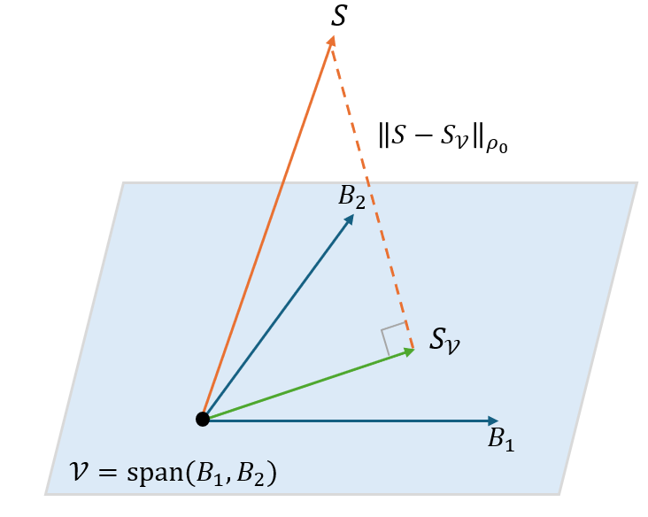

Bayes gets tractable, one subspace at a time
Guest post by Edward Gandar. Portsmouth, 24 August 2026
Bayesian quantum estimation is a theory of statistical inference used to estimate unknown parameters encoded in quantum states. It is particularly suited for scenarios with limited data and takes into account any prior information known beforehand (if any!). The theory can tell you the optimal way to prepare your probe, what measurement to make, and how to best process your data.
Many quantum technologies are built on continuous-variable systems, for example the bosonic modes of laser light, with applications ranging from gravitational wave detection to ultra-precise magnetometry. The catch is that these systems live in infinite-dimensional Hilbert spaces, which makes the equations defining the optimal strategy difficult to solve. So far, Bayesian treatments have mostly had to fall back on numerics.
In arXiv:2605.16978, we suggest an alternative. The idea is to stop asking for the globally optimal measurement and estimator, and instead ask for the best one available inside a subspace we choose in advance. This turns the optimisation into a convex quadratic problem, with the solution given by a finite-dimensional linear system. For Gaussian states, which are completely specified by a mean and a covariance matrix, every entry of this linear system follows from those two objects, so the whole construction remains analytic.
Of course, giving up global optimality raises the obvious question: how much do you lose? Here the answer has a nice geometric form. The subspace-optimal estimator-measurement pair is the projection of the global optimum onto the chosen subspace, and the extra loss you incur is exactly the squared distance between the two. You never have to construct the global optimum to find its projection.

Best of all, none of this really depends on the states being Gaussian. The only requirement is that the relevant moments are finite, and that says nothing about dimension, so the same machinery applies to non-Gaussian continuous-variable probes and to finite-dimensional systems, covering a wide range of estimation scenarios.